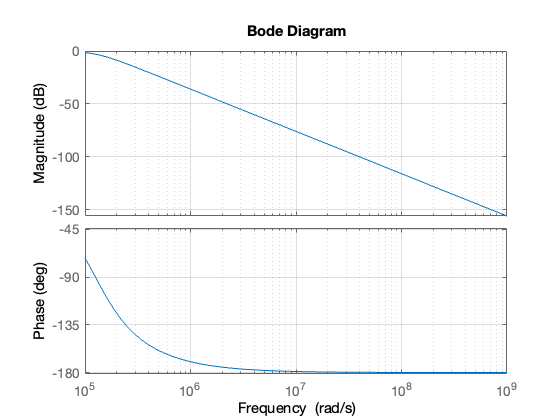
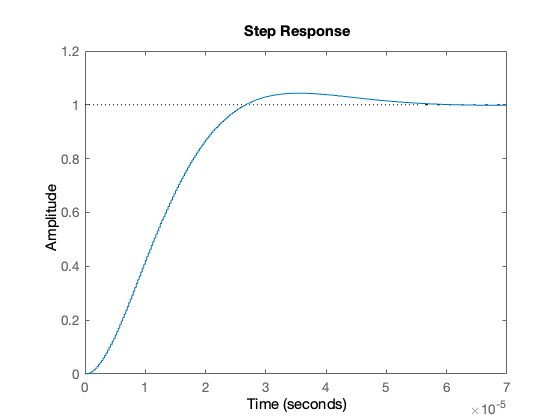

Contents
clear all
imatlab_export_fig('print-svg') % Static svg figures.
cd matlab
pwd
format compact
Error using eval
Undefined function 'imatlab_export_fig' for input arguments of type 'char'.
Nz = [1 1 0];
Dz = [1 -0.5 0.125];
[r,p,k] = residue(Nz,Dz)
r =
0.7500 - 0.5000i
0.7500 + 0.5000i
p =
0.2500 + 0.2500i
0.2500 - 0.2500i
k =
1
Hz = tf(Nz,Dz,1)
hn = impulse(Hz, 15);
Hz =
z^2 + z
-------------------
z^2 - 0.5 z + 0.125
Sample time: 1 seconds
Discrete-time transfer function.
stem([0:15], hn)
grid
title('Example 5 - Part 2')
xlabel('n')
ylabel('Impulse response h[n]')
impulse(Hz,15)
grid
title('Example 5 - Part 2 - As Analogue Signal')
xlabel('nTs [s]')
ylabel('Impulse response h(t)')
open dtm_ex1_3
Error using open
File 'dtm_ex1_3' not found.
Ts = 1;
z = tf('z', Ts);
Hz = (z^2 + z)/(z^2 - 0.5 * z + 0.125)
Hz =
z^2 + z
-------------------
z^2 - 0.5 z + 0.125
Sample time: 1 seconds
Discrete-time transfer function.
step(Hz)
grid
title('Example 1 - Part 3 - As Analogue Signal')
xlabel('nTs [s]')
ylabel('Step response y(t)')
axis([0,15,0,3.5])

dtm
Error using eval
Unrecognized function or variable 'dtm'.
help c2d
C2D Converts continuous-time dynamic system to discrete time.
SYSD = C2D(SYSC,TS,METHOD) computes a discrete-time model SYSD with
sample time TS that approximates the continuous-time model SYSC.
The string METHOD selects the discretization method among the following:
'zoh' Zero-order hold on the inputs
'foh' Linear interpolation of inputs
'impulse' Impulse-invariant discretization
'tustin' Bilinear (Tustin) approximation.
'matched' Matched pole-zero method (for SISO systems only).
'least-squares' Least-squares minimization of the error between
frequency responses of the continuous and discrete
systems (for SISO systems only).
'damped' Damped Tustin approximation based on TRBDF2 formula
(sparse models only).
The default is 'zoh' when METHOD is omitted. The sample time TS should
be specified in the time units of SYSC (see "Tim
eUnit" property).
C2D(SYSC,TS,OPTIONS) gives access to additional discretization options.
Use C2DOPTIONS to create and configure the option set OPTIONS. For
example, you can specify a prewarping frequency for the Tustin method by:
opt = c2dOptions('Method','tustin','PrewarpFrequency',.5);
sysd = c2d(sysc,.1,opt);
For state-space models,
[SYSD,G] = C2D(SYSC,Ts,METHOD)
also returns the matrix G mapping the states xc(t) of SYSC to the states
xd[k] of SYSD:
xd[k] = G * [xc(k*Ts) ; u[k]]
Given an initial condition x0 for SYSC and an initial input value u0=u(0),
the equivalent initial condition for SYSD is (assuming u(t)=0 for t<0):
xd[0] = G * [x0;u0] .
See also C2DOPTIONS, D2C, D2D, DYNAMICSYSTEM.
Documentation for c2d
doc c2d
Other uses of c2d
DynamicSystem/c2d lti/c2d ltipack.tfdata/c2d
doc c2d
wc = 2*pi*20e3
wc =
1.2566e+05
Hs = tf(wc^2,[1 wc*sqrt(2), wc^2])
Hs =
1.579e10
---------------------------
s^2 + 1.777e05 s + 1.579e10
Continuous-time transfer function.
doc bode
bode(Hs,{10e4,10e8})
grid

w_stop = 100*wc
w_stop =
1.2566e+07
ws = 2* w_stop
ws =
2.5133e+07
fs = ws/(2*pi)
fs =
4000000
Ts = 1/fs
Ts =
2.5000e-07
Hz = c2d(Hs, Ts)
Hz =
0.0004862 z + 0.0004791
-----------------------
z^2 - 1.956 z + 0.9565
Sample time: 2.5e-07 seconds
Discrete-time transfer function.
step(Hz)

open digifilter
Error using open
File 'digifilter' not found.